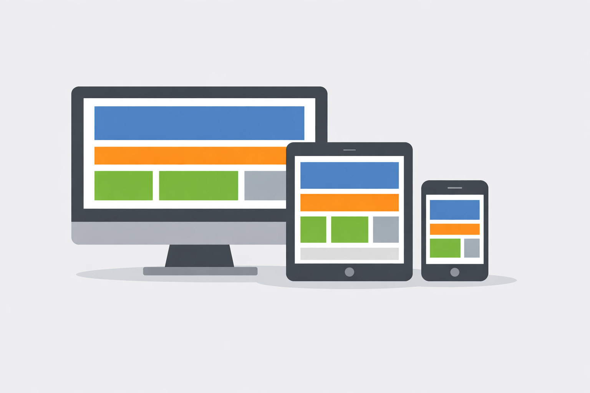

Diseño Web Responsivo
El diseño web responsivo es una técnica de desarrollo web que permite adaptar automáticamente la apariencia y distribución del contenido según el tamaño de la pantalla utilizada por el usuario.
Sebastian Cubero Morales

En la actualidad, el acceso a las páginas web se realiza desde distintos dispositivos, por lo que resulta importante que los sitios puedan ajustarse a cualquier resolución de pantalla. El diseño web responsivo ayuda a lograr este objetivo, permitiendo que el contenido se visualice de forma adecuada tanto en computadoras como en dispositivos móviles. Para ello se emplean herramientas como Viewport, Media Queries y Bootstrap 5.
El diseño web responsivo es una técnica de desarrollo web que permite adaptar automáticamente la apariencia y distribución del contenido según el tamaño de la pantalla utilizada por el usuario.
El viewport representa el área visible de una página web dentro del navegador. Su correcta configuración permite mejorar la visualización de los sitios en dispositivos móviles.
Las Media Queries permiten aplicar diferentes estilos CSS de acuerdo con características específicas de la pantalla, como su ancho, orientación o resolución.
Bootstrap 5 es un framework de código abierto que facilita la creación de sitios web modernos y responsivos mediante componentes y herramientas predefinidas.